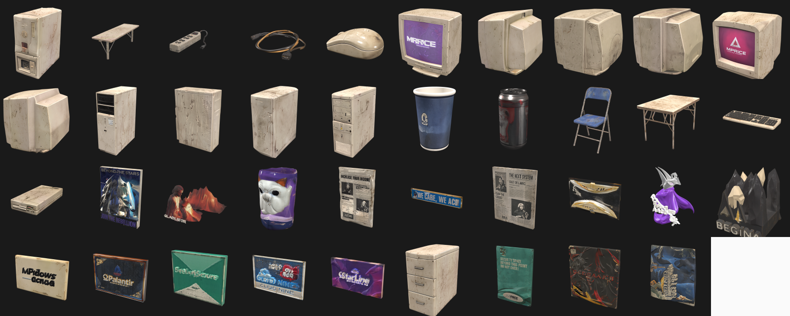
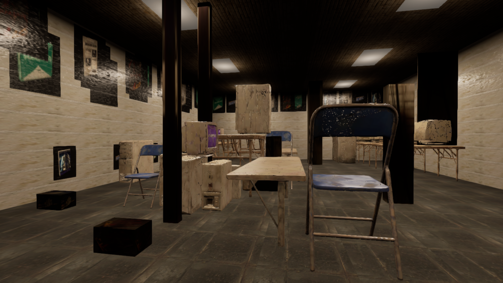
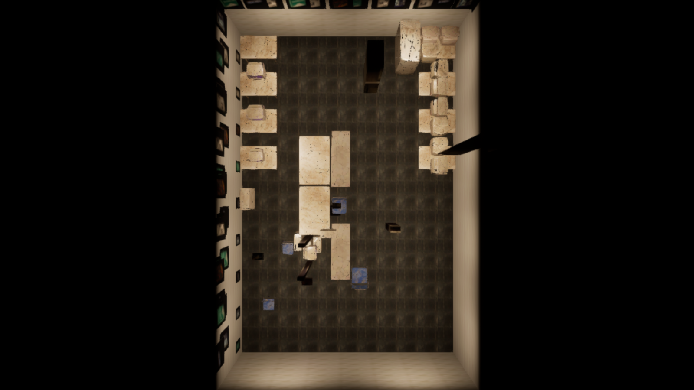

参考图（左）与管线自动重建的 UE5 场景（右，对齐机位自动截图）。三排桌骨架、CRT 阵列、海报墙、立柱、灯光氛围均由管线自动完成。
| 指标 | 实测 |
|---|---|
| 端到端耗时 | 温缓存约 3 分钟；全冷跑（真实 API）约 20 分钟 |
| 装配结果 | 127 actors / 0 errors，含穿模自动检测报告 |
| 资产匹配 | 37 个感知对象，26 命中资产库真模型，零静默丢弃 |
| 交付工程包 | 约 382 MB（限 500 MB），含预编译二进制与离线回放缓存 |

四步：① 减面（150万→8–20万面，保 UV）+ 贴图 2K/1K + ORM 通道合并 + 坐标系归位 → ② VLM 受控词表打标（与感知共用同一份词表，运行时匹配退化为字符串相等；尺寸交叉校验进人工复核）→ ③ UE 批量预导入（Nanite/碰撞/材质实例，运行时装配只 load_asset，30–60 秒完成）→ ④ 运行时四级瀑布匹配：人工覆盖 → 类别命中+变体轮换 → VLM 视觉兜底 → 参考图贴图代理盒。缩放四档畸形保护，细长物/未知类禁入库匹配，全程零静默丢弃。
| 环节 | 模型/服务 | 对 AI 输出的后处理与逻辑控制 |
|---|---|---|
| 资产生成（离线） | 云端图像拆分工具 + 云端图生 3D | 减面/降采样/通道重打包/坐标系归位——全确定性脚本 |
| 资产打标（离线） | Gemini 3 Pro（经 云端 VLM 网关） | 闭集词表钳制；估计尺寸 vs 实测交叉校验；人工核对位不被重打标覆盖 |
| s01 感知 | Gemini 3 Pro | JSON 校验+修复重试；分块检测统一 NMS；相机标定不用 AI |
| s03 材质/海报 | Gemini 3 Pro（图像） | 取样滑窗选亮；ECC 对齐回原图；接缝分数质检循环；法线/粗糙度/AO 确定性推导 |
| s03 氛围估计 | Gemini 3 Pro | 白平衡钳 [6500,8000]、曝光/雾密度钳制；失败回默认值不断链 |
| s04 视觉兜底 | Gemini 3 Pro | 置信度 ≥0.6 才采纳；缩放畸形四档保护，误匹配直接拒绝 |
| s05 装配 | —（无 AI） | 100% 确定性；布局规则链 + AABB 去穿插 + 穿模检测报告 |
每次运行逐调用留痕于 output/run_*/api_calls.jsonl（阶段/模型/缓存命中/耗时）；离线回放模式下全部命中随工程附带的缓存，评审机无 Key 可完整复跑。


代表性问题与修法（完整过程见工程内迭代记录）：同名资产复用导致旧贴图僵尸（装配前整树清理）；UE 体积雾默认天蓝散射色染蓝全场（显式中性灰）；VLM 光源色温误用为白平衡（钳制区间）；细长物匹配成假墙（禁入库走代理盒）；桌面物支撑失联悬空（支撑面吸附）。
| 项目/服务 | 性质 | 用途 |
|---|---|---|
| 云端图像拆分 / 图生 3D 服务 | 云服务 | 参考图拆分 42 单件；图生 3D 高模 + PBR 贴图 |
| 云端 VLM 网关 → Gemini 3 Pro | 云端网关 | 感知/打标/氛围/兜底匹配与图像生成 |
| NumPy / OpenCV / PyYAML | BSD / Apache / MIT | 布局求解、标定、图像处理、配置 |
| PyMeshLab | GPL-3（仅作者侧） | 保 UV 减面，不随工程分发 |
| UE5.5 PythonScriptPlugin 等 | 引擎自带 | 内嵌 Python、编辑器脚本化 |
未使用 ComfyUI；未引入第三方美术资产——全部网格/贴图由上述 AI 服务从参考图生成或管线程序化创建。
| 层 | 根因 | 画面表现 | 改进路线（写给下一版） |
|---|---|---|---|
| 感知 | VLM 把整排设备并成一框、贴墙桌带被框成画面内部框——结构证据缺失，只能靠规则推断补全 | 桌带位置/密度与原图错位；数量偏少（CRT 召回 13/16） | 开放词汇检测器（Grounding-DINO/SAM2）逐实例召回+掩码；分块检测已验证有效（50→68），下一步实例分割 |
| 深度/标定 | 单目无度量深度：box3d 绝对深度误差 ±30–50%，地面射线假设物体贴地，叠放/架空物解算错位 | 全场尺度漂移、前后关系与原图不符 | 度量深度模型（Metric3D / Depth-Anything）逐像素深度直接摆放；灭点标定常态化；多图/视频输入消歧 |
| 布局 | 一次性前馈：规则补全（镜像带/等距上桌）是"合理化"而非"复原"，均匀间距抹掉原图的有机杂乱 | 排布过于整齐、密度不足、局部空旷 | 闭环布局优化：装配→截图→VLM 与参考图比对打分→增量修正指令（回执寻址机制已为此预留） |
| 资产/尺寸 | 注册表 bbox 与真实网格实测差达 1.56×；词表类别匹配挑不准款式；缩放钳制"信资产不信深度" | 个别比例失真、款式对应错位 | UE 实测 bbox 回写注册表（本版穿模/悬空双修已实证"实测为准"）；预览图 embedding（DINOv2）款式级检索 |
| 材质/光照 | 单点取样重铺产生平板感（白釉砖 → 偏米黄）；面板灯近似，无原图光传输匹配 | 墙面质感差异明显、氛围偏暖偏平 | tileable 感知材质生成或 PBR 库检索；渲染图↔参考图的曝光/白平衡自动校准闭环 |
NetEast_TA_Test.uproject（含预编译二进制；首开等 shader 编译 5–15 分钟）。Plugins/AISceneBuilder/Python/refs/ref_original.jpg → 依次五步 → 装配。/Game/Maps/GenScene；回执/对比图/调用留痕在 .../Python/output/run_*/。